Punto 1 SSH
Windows a Ubuntu
Lo primero es que las maquinas tengan conexion entre sí configurando las IPsLuego es instalar el servicio ssh y que este activo
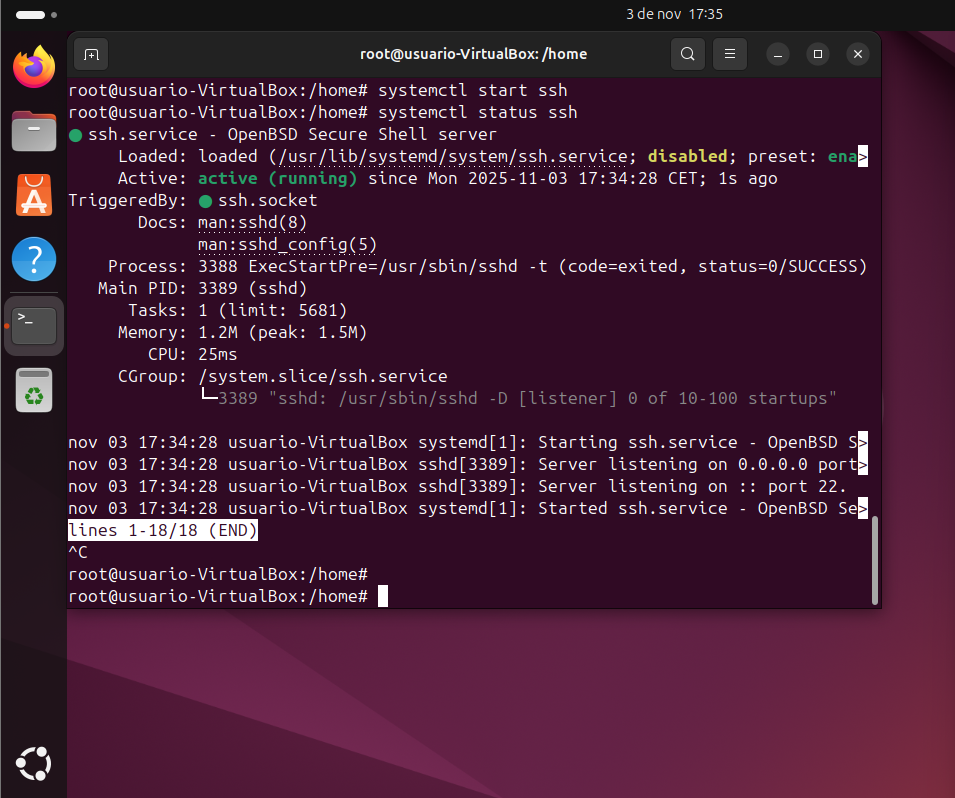 Después se instala PuTTy en el Windows
Una vez instalado saldrá esta ventana y habra que poner la IP del servidor y aceptar
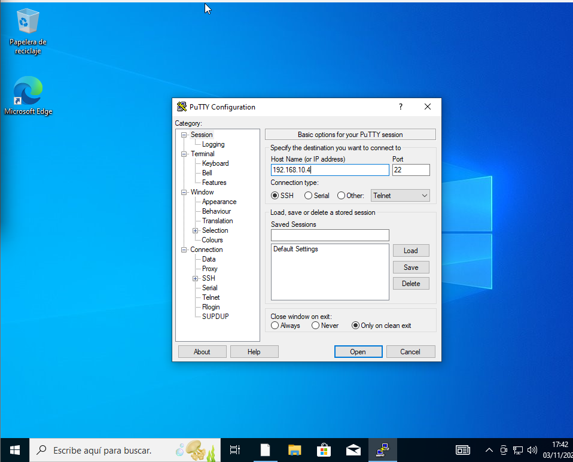 Una vez hecho esto pedirá el usuario y la contraseña desde la terminal, una vez introduzcas ambos datos entrarás en la terminal del ubuntu host.
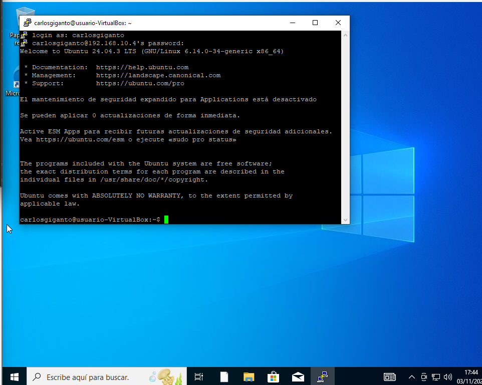
Ubuntu a Windows
Ahora desde un Ubuntu a otro ubuntu, primero se instala el ssh cliente en el otro ubuntu, una vez hecho esto es tan fácil como poner lo siguiente: ssh "nombredeusuario"@"ip"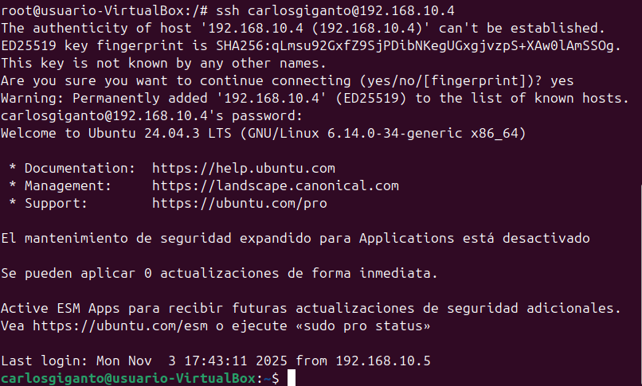
Punto 2 RDP
Windows a Windows
Primero habrá que permitir las conexiones remotas desde los Windows que utilicemos que son los que funcionan con el protocolo RDP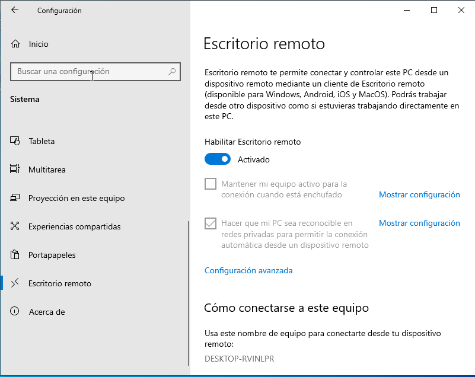 Luego hacemos Windows + R y ponemos mstsc y saldrá esta ventana con la que ponemos la IP y las credenciales del usuario y ya nos podríamos conectar.
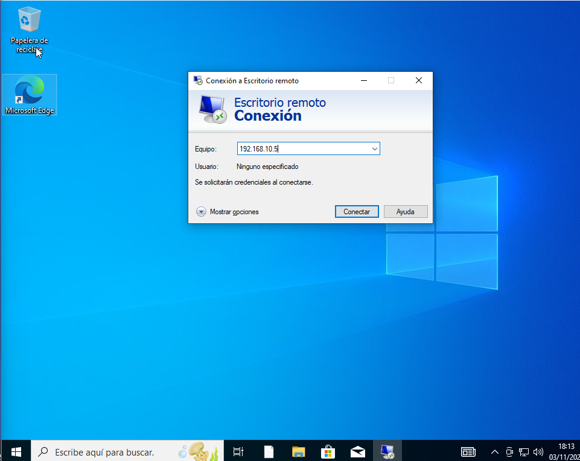 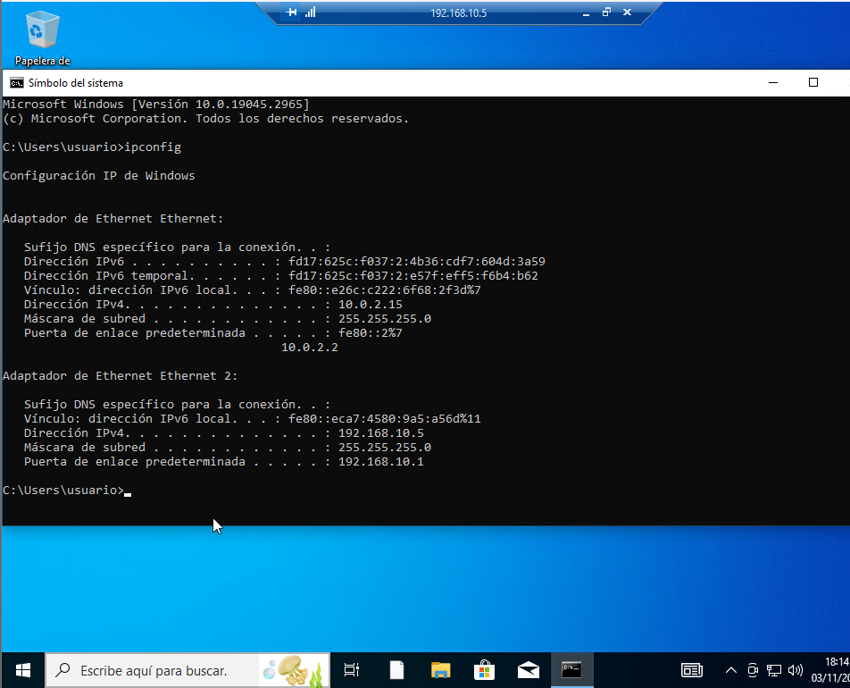
Ubuntu a Windows
Primero tenemos que instalar Remmina en el Ubuntu que es la aplicación que permite la conexión remota por RDP desde Ubuntu porque de normal Linux utliza SSH, una vez instalado a la que lo abramos saldrá esta ventana.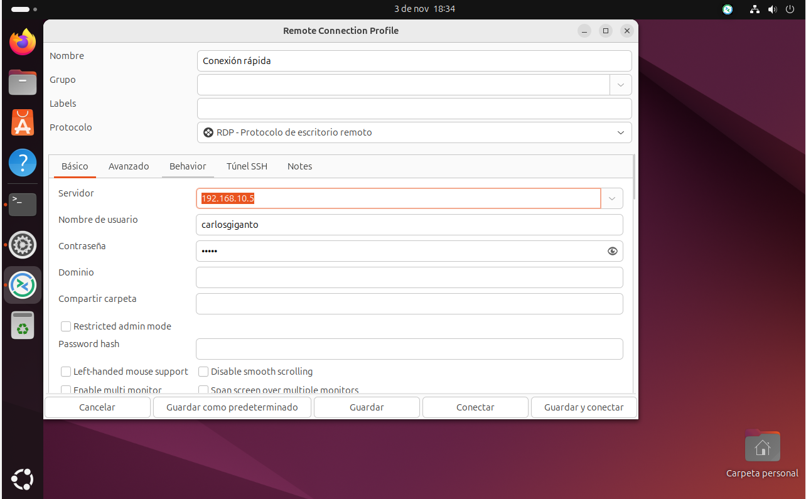 Aquí ponemos todas las credenciales y la IP del equipo al que nos queremos conectar y podremos controlar el Windows desde el Ubuntu, si hemos puesto todo bien saldra algo así.
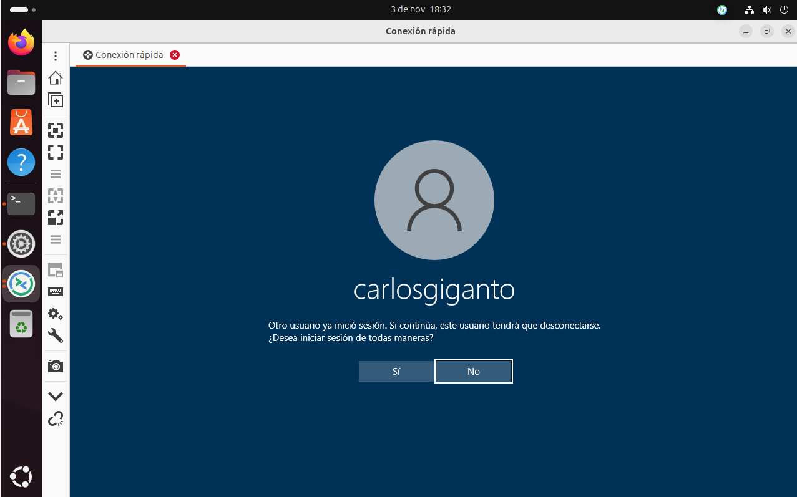
Punto 3 TeamViewer
Obviamente tenemos que instalar TeamViewer en todas las máquina en las que queramos operar, una vez hecho esto saldrá por cada equipo una codigo de acceso remoto y su contraseña, cuando intentemos hacer la conexión remota pedira el codigo y la contraseña del equipo al que nos queramos conectar y se nos conectaráUbuntu a Windows
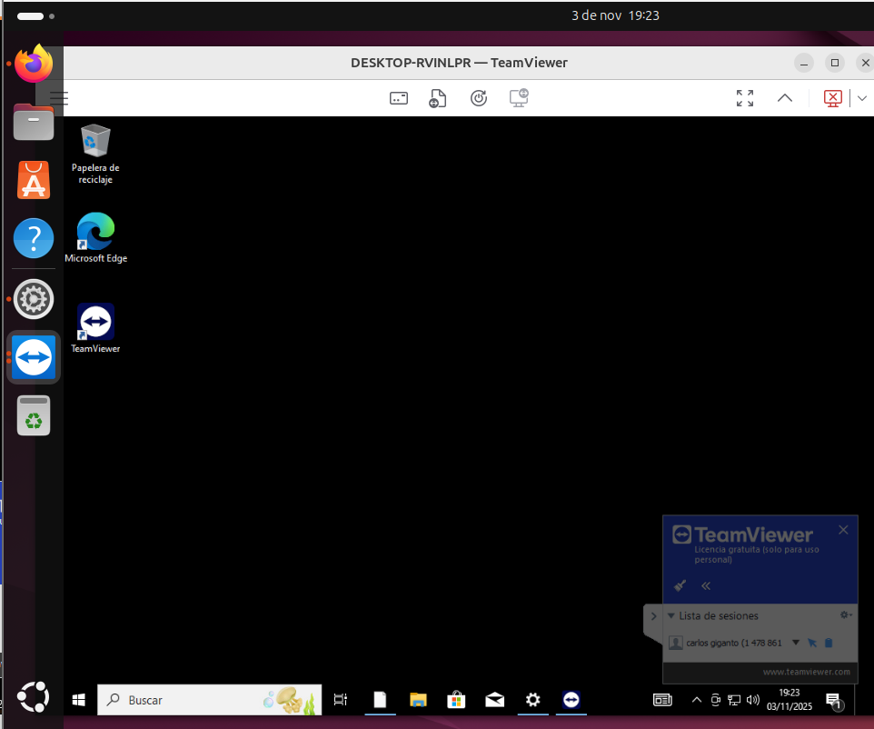Windows a Ubuntu
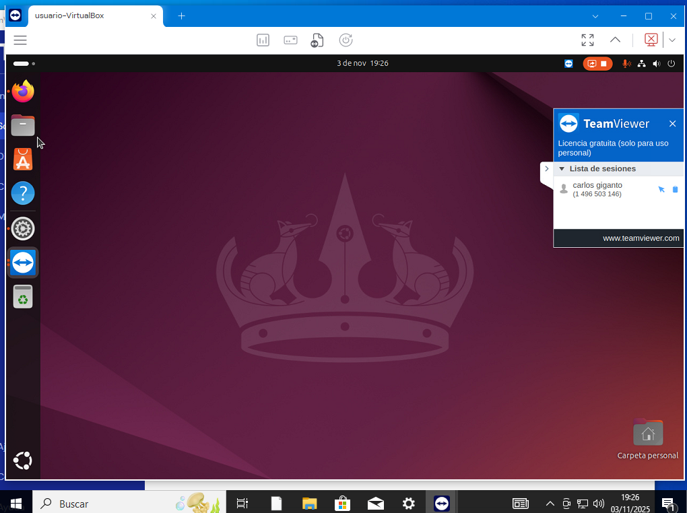Ubuntu a Ubuntu
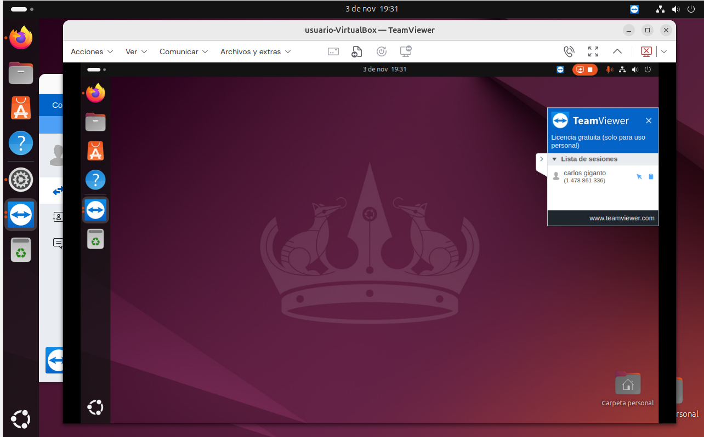Windows a Windows
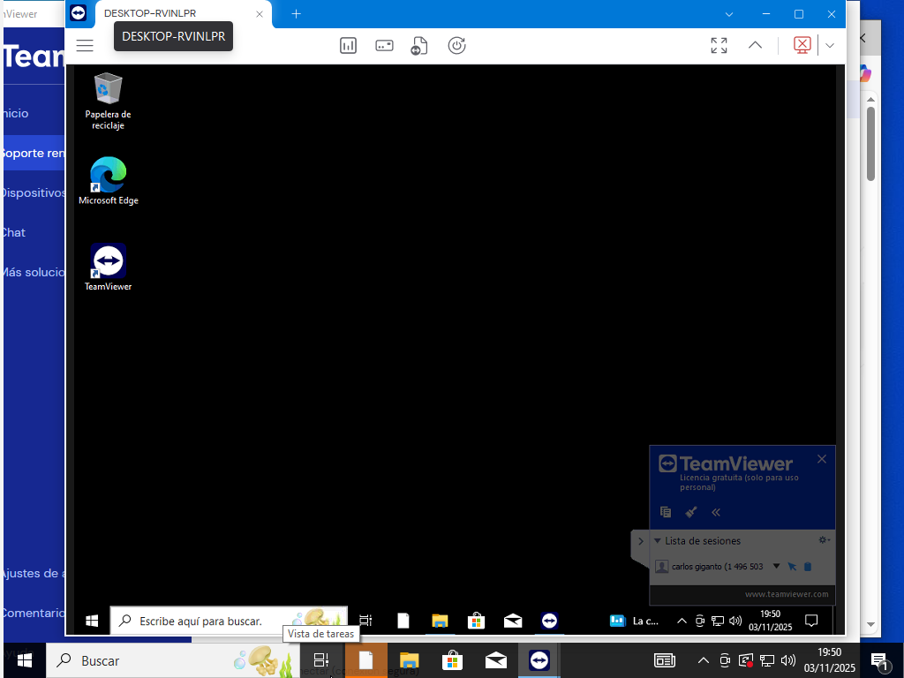Móvil a Windows

Móvil a Linux